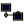
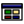
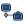
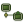
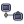
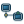

Classic
Windows 95/98/2000 / default


Brand + start marks
Original subtle texture
Original desktop wallpaper
Six original theme families, a complete shell icon set, textures, wallpapers, start marks, and opt-in audio. No remote resources.
Windows 95/98/2000 / default


Windows XP / blue

Windows XP / olive

Windows XP / silver

Windows 7 / aero

Windows 7 / basic
Audio never autoplays. Use the controls to audition each original cue.
| File | Local preview | Provenance |
|---|---|---|
| activate.wav | Original deterministic PCM16 synthesis; CC0-1.0; no Windows audio sampled or imitated. | |
| notify.wav | Original deterministic PCM16 synthesis; CC0-1.0; no Windows audio sampled or imitated. | |
| complete.wav | Original deterministic PCM16 synthesis; CC0-1.0; no Windows audio sampled or imitated. | |
| error.wav | Original deterministic PCM16 synthesis; CC0-1.0; no Windows audio sampled or imitated. |